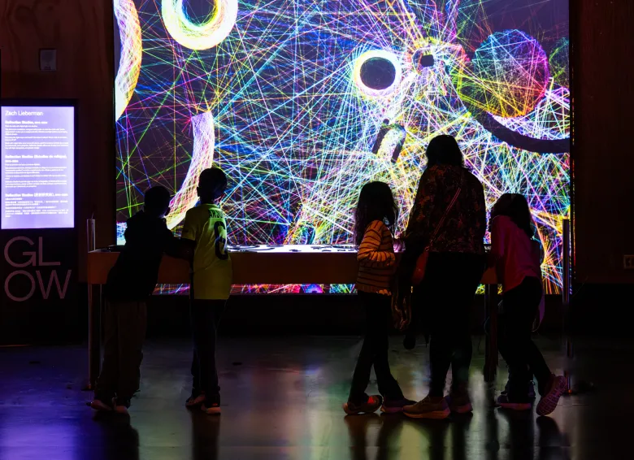

"Als ik in de spiegel kijk, dan zie ik dat mijn pupillen rond zijn."
Ik vertrek vanuit mijn lichaam, mijn nulpunt, en kijk naar de wereld. Ik draai rond en zie het landschap voor mij verschijnen. Ik creëer een cirkel, waarbij mijn lichaam het middelpunt is, mijn blik de straal en de wereld de omtrek.
Vandaag de dag weten we dat het berekenen van de cirkel de straal x Pi is, maar voor het getal Pi werd berekend, was het een hele wiskundige klus om een cirkel oppervlak te berekenen. Pi = 3,14…. Met een oneindig aantal cijfers na de komma. Hoe rekenden ze zo'n ingewikkelde vorm uit in de oudheid? Eerst ontdekten ze dat de omtrek van een cirkel ongeveer 3 maal de straal was, maar dat was geen precieze berekening. De queeste naar de berekening van de omtrek van de cirkel was iets dat vele oude Grieken bezighield. De eerste wiskundige die heel dicht kwam bij het berekenen van een cirkel, was Archimedes.
Archimedes, een wiskundige uit het oude Griekenland (van ca. 287-212 v. CH.), wordt gezien als één van de grootste wiskundigen uit de Griekse oudheid. Zo riep hij Eureka! wanneer hij zijn lichaams-massa in water uit het bad zag stromen en de zo dichtheid van massa ontdekte. Hij bestudeerde ook geometrische vormen die hij opmat en daarvoor formules of algoritmes bedacht, waaronder de cirkel. Archimedes bedacht dat als hij vormen die zoveel mogelijk overeenkomstige punten hebben met de cirkel errond plaatste, hij uiteindelijk de cirkel wel zou kunnen berekenen. Zo begon hij met het plaatsen van een zeshoek binnenin de cirkel en zeshoek buiten de cirkel. Zo keeg hij twaalf punten die op de omtrek van de cirkel lagen die hij kon berekenen. Vervolgens maakte hij er twee twaalfhoeken van en bekwam hij 24 overeenstemmende punten, enzovoort (uit boek: 'Als dit dan dat; De algoritmen waar de digitale wereld op draait,' Chris Bleakley, februari 2023, Hstk 2: Alsmaar uitdijende cirkels, p. 37-41). Archimedes zag de cirkel niet meer als een cirkel, maar als een veelhoek, waarvan de punten zodanig dicht bij elkaar lagen, dat ze niet meer van elkaar te onderscheiden waren. Hij bedacht een ingewikkelde algoritmische formule en kwam hij heel dicht bij het getal Pi. Archimedes maakte gebruik van de ruimte buiten de cirkel om de cirkel zichtbaar te maken, net zoals de lichtstralen die vallen op een object het object vormen en het zichtbaar maken.
Vandaag de dag zijn er honderden manieren om een cirkel te bekomen, die vertrekken vanuit de gedachten van Archimedes. Om een digitale cirkel te bekomen is er eerst een handeling, een taal, een formule nodig om deze te bekomen. Archimedes gebruikte de veelhoeken om de cirkel te bekomen, maar er zijn talloze andere standpunten waaruit je de vorm van een cirkel kan bekijken. Archimedes toont aan dat het niet gaat over de vorm van de cirkel zelf, maar om te benadering ervan. Iets alomvattends trachten te ontmoeten op een altijd anders of veranderende manier. Alles zou de vorm van een cirkel kunnen aannemen, als de uitkomst een cirkel moet zijn. Hoewel Archimedes veelhoeken hanteerde, zijn er talrijke alternatieve benaderingen denkbaar. Zijn methode illustreert dat het niet de exacte vorm centraal staat, maar de benadering ervan; het streven om iets alomvattends te vatten via voortdurend wisselende methoden. Elk uitgangspunt kan tot een cirkel leiden, mits de cirkel het beoogde resultaat is.
Dit is een gecodeerde cirkel:
<div class=".cirkel-lijn"> <style> .cirkel-lijn { width:
150px; height: 150px; border: 2px solid black; border-radius: 50%;
margin: 40px auto; } </style>
De Amerikaanse media kunstenaar en docent Zachary Lieberman liet zich inspireren door één van zijn leerlingen, die een thesis schreef waarin die al de verschillende algoritmes die er bestaan voor de cirkel verzamelde. Lieberman werd gevraagd om ook een contributie te schrijven en hij bedacht een manier om de cirkel te construeren door de afwezigheid van de cirkel in te vullen. Hij vertrok van een vierkant en koos twee punten op de omtrek van het vierkant, die hij vervolgens verbond met elkaar, maar enkel wanneer de lijn de nog niet bestaande cirkel niet aanraakte. Zo ontstond er een web van lijnen waar de cirkel niet was en een zwart gat in de vorm van een cirkel. Hij gebruikte het principe dat Archimedes ooit ontdekte waarbij de afwezigheid van de vorm de vorm juist vormgeeft. Lieberman creëerde een computationeel algoritme die dit met verschillende objecten kon doen een creëerde het werk 'Reflection Studies' (Zachery Lieberman 'Reflection studies': 'Reflection studies is an interactive installation which simulates light bouncing off shapes on a light table that users can re-arrange. Some clips: 1, 2, 3, 4, 5, 6, 7,' , link http://zach.li). In dit werk kon het publiek objecten leggen op een tafel en berekende het algoritme het silhouet van die objecten. De berekening werd dan vervolgens geprojecteerd in 'real time'.
Ook de natuur vormt voortdurend cirkels. De bomen maken cirkels jaar na jaar, een steentje valt in het water en het water vormt cirkels rond het middelpunt van de gevallen steen. De steen brengt vervolgens een lange tijd door in het water, dat door de stroming ervan het reliëf van de steen verwijderd en uiteindelijk rond vormt. Iets krijgt vorm door alles wat het niet is errond in te vullen. Door op een knopje te drukken, springt mijn computerscherm aan en vult de leegte van het zwart scherm in met alles wat het niet meer is; een zwart scherm. Deze wiskundige berekening zorgde voor een nieuw soort kijken naar algoritmes die cijfers gebruiken die de vorm(ing) van een object blootstellen. Deze gedachte ligt aan het begin van de vorming van de digitale ruimte (De digitale ruimte is voor mij de ruimte die het digitale inneemt, van licht, naar pixel naar hardware).

Afbeelding: Fancher, L. (2024, 24 december). Fun, intriguing, interactive installations light up in Exploratorium's 'Glow'. Piedmont Exedra. https://piedmontexedra.com/2024/12/fun-intriguing-interactive-installations-light-up-in-exploratoriums-glow